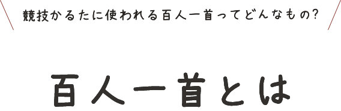
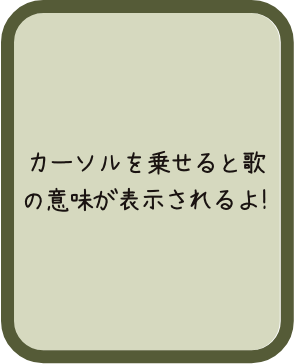
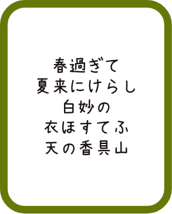
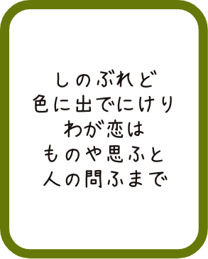
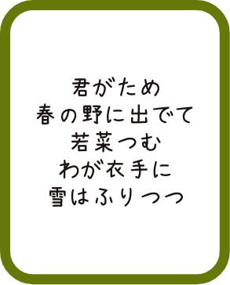
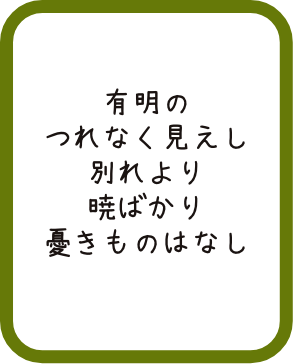
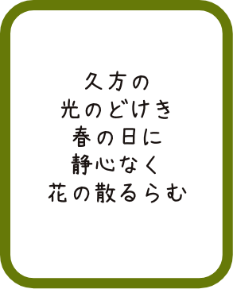
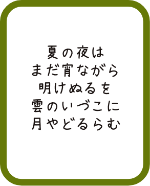

百人一首とは、飛鳥時代から鎌倉時代までの100首の和歌の歌集です。
藤原定家という鎌倉時代を代表する歌人が、優れた和歌を選んで作られたと言われています。
百人一首は春、夏、秋、冬、恋の5つのテーマで分けることが出来ます。中でも恋をテーマと
した歌は43首もあり、多様な恋心が美しい言葉で巧みに綴られています。


いいいいいい

うううううう

うううううう
うううううう

うううううう

うううううう

うううううう
他の歌の意味も調べてみよう！